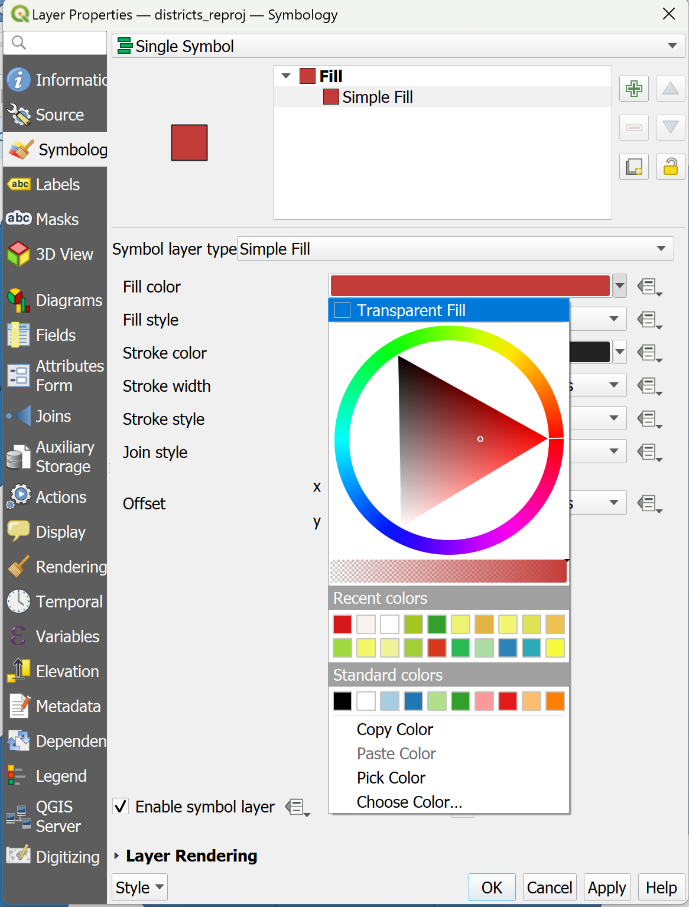
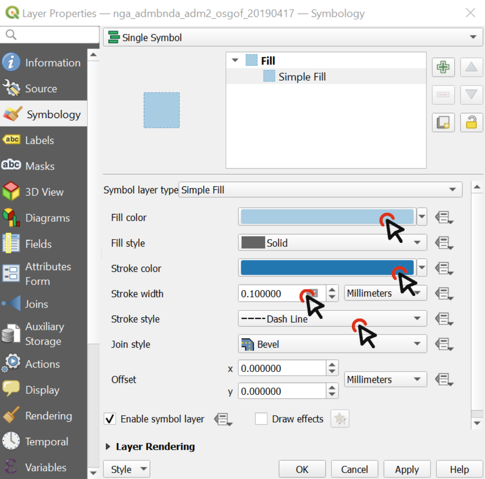
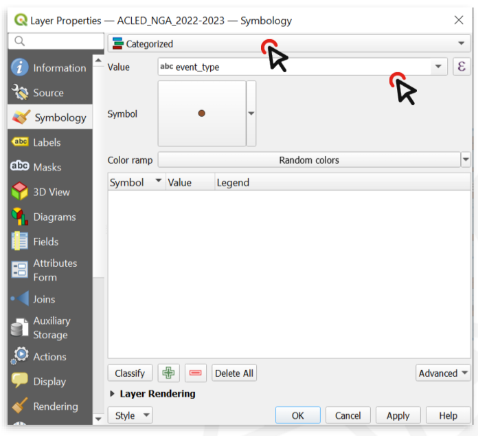
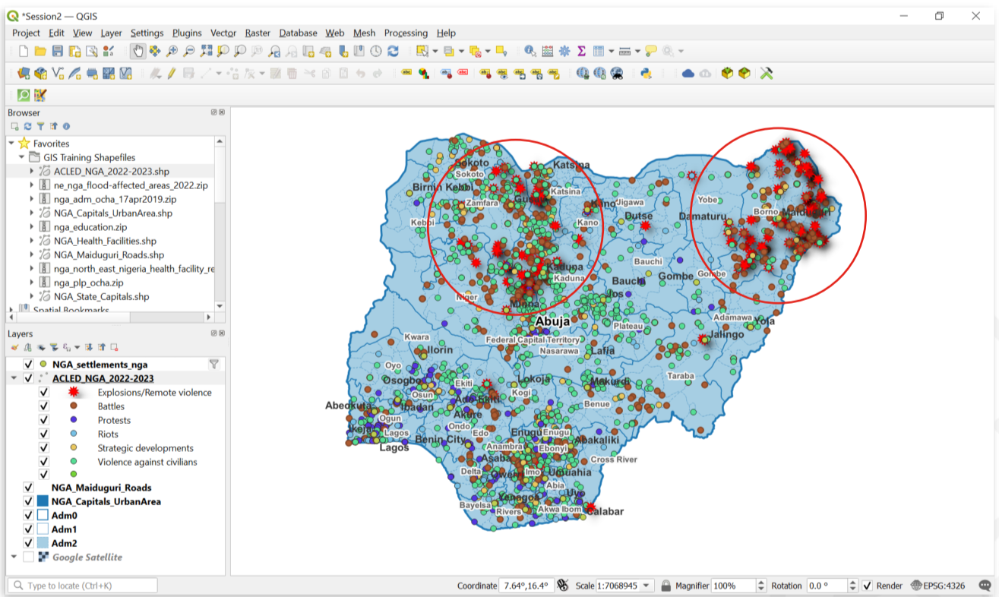
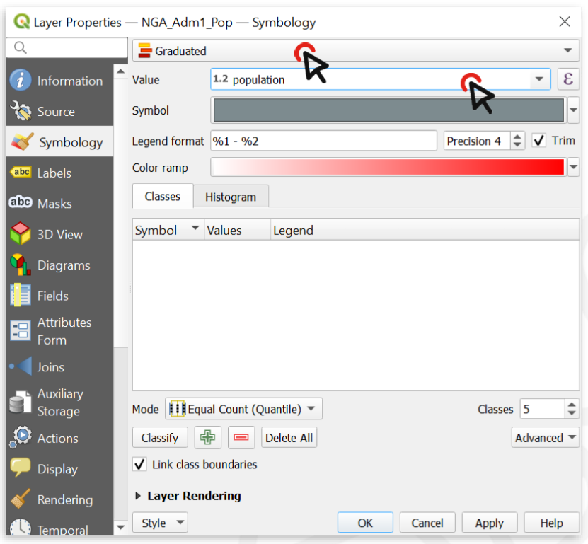
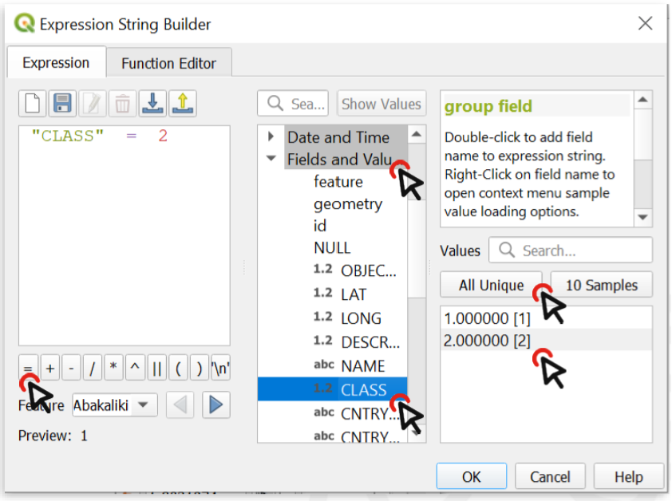
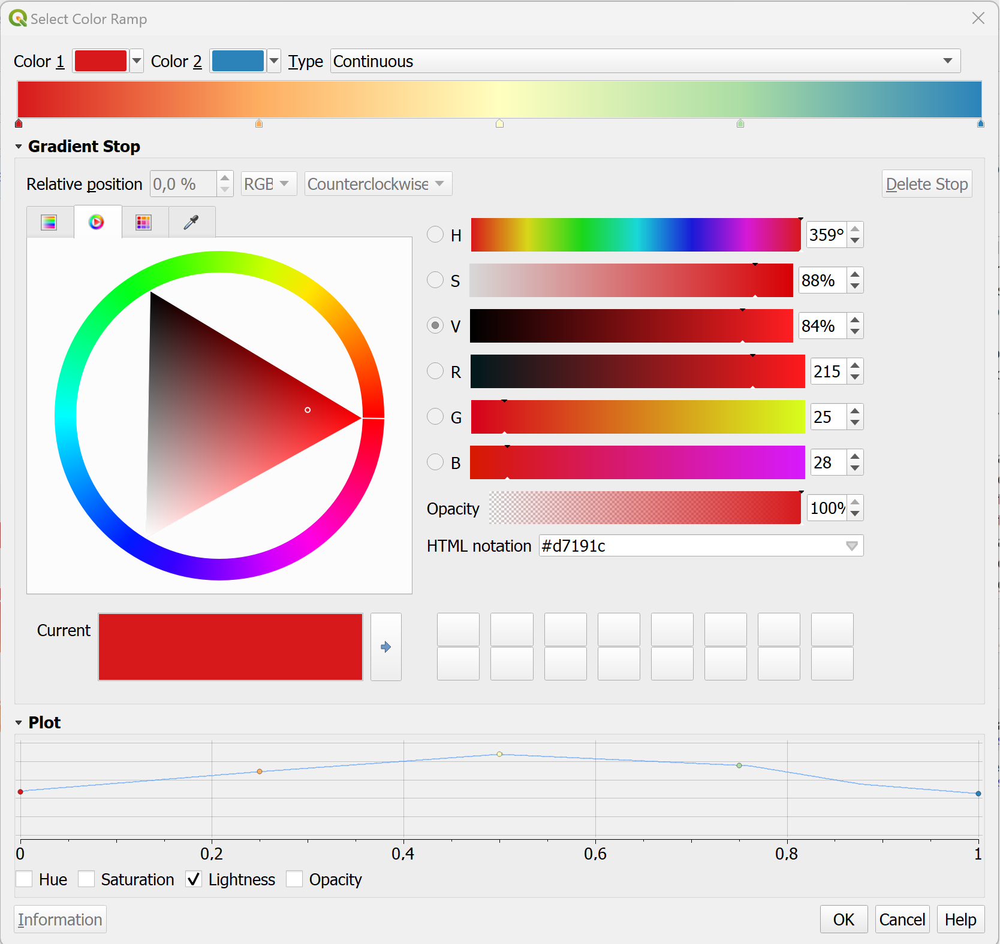

Visualisation#
Visualising vector data#
Symbology#
QGIS offers various ways to visualize vector data. In the Symbology Tab, you can select between various symbolization methods
Assigns one symbol to every feature of the dataset, no matter if the attributes are different.
For example, assign a hospital symbol to a layer that only contains points showing the location of hospitals.
Classifies features into categories using an attribute (
Value).A category is created for each unique value of this attribute.
Each category can be assigned to a different symbol.
This can be used for nominal as well as ordinal data.
For example, assign a different symbol for each type of building (industrial, commercial, public, residential,…)
Creates classes for numerical data.
A colour gradient can be selected to represent the distribution of the data
For example, create 6 classes of population sizes and assign a color gradient from white to red to indicate the population size in a district.
Create rules using an expression and assign a symbol for the features where the rule applies.
You can specify more accurately the features you want to symbolize.
You can use values from different attributes (e.g. building type and city district).
The expression builder helps you create rules by displaying the available values, fields, operators, etc…
For example, select a symbol for every health facility that is a hospital and has exceeded it’s capacity.
Only display the outlines of polygons
In this example, we want to change the symbology of a single layer so that only the outlines of the polygons are visible.
To change the symbology of a single layer:
Open the
Styling paneland navigate to the symbology tab. By default, the symbology will be set toSingle Symbol. This means that the same colours and contours will be applied to all the features in that layer.Click on
Simple FillClick on the arrow to the right of
Fill ColourCheck the
Transparent Filloption.
{kind=link}

Change the styling for multiple overlayed layers
In this exercise, we will apply the same style to all features in a layer, but we will change multiple layers and overlay them so each is visible in a different style. We have the polygons for 3 administrative levels.

Fig. 20 Order the layers and navigate to the styling panel of the topmost layer#
Add the
Adm0,Adm1andAdm2shapefiles to your Session 2 project.Order the layers so they are all visible: Put the
Adm2layer at the bottom, then theAdm1thenAdm0. At first, this might look weird becauseAdm0will cover everything.Change the symbology of the Adm0 layer by opening the stlying panel and navigating to the Symbology tab.

Fig. 21 Change the Fill type#
Click on
Simple Fillto open the style options.Expand the
Fill Colourmenu and check theTransparent Filloption. This will make only the boundaries visible, so we will be able to see the layer under this one.Choose a
Stroke Colour, and make theStroke Width0.66 Millimeters.Click OK
Repeat the same process for the Adm1 layer, using the same colour as for Adm0 (it will be in “Recent colors) and leave the stroke width at 0.26.
Now we can see the boundaries of the country and its states, and behind that we can see the districts (Adm2).
Let’s make the districts layer’s style consistent with the others.
Choose a
Fill ColorUse the same Stroke Colour` as for Adm0 and Adm1, but make the width 0.1 Millimeters and the Stroke Style a Dash Line
Click OK and look at your map: hopefully it’s starting to look nicer!

Fig. 22 The styling of a vector data consists of the colour and the outline#
Use different styles in a single layer
We can use symbology to show the difference between features in the same layer. For example, it could be different types of buildings, quantities of Covid cases by district, or types of roads. We can choose a specific attribute of a dataset to assign different colors, outlines, or sizes to features:
From your shapefile folder, drag te ACLED security incidents shapefile onto your map
Open the
Symbology tabfor that layer and chooseCategorizedinstead of Single Symbol.
Note
Categorized symbology is used when you have discrete variables.
{kind=link}

Fig. 23 Change the symbology type to “categorized” and choose the Value (variable) you wish to display#
Now we need to choose which attributes we want to display through the symbology. In this case, it could be the number of casualtiees, or the actor who perpetrated the act. Let’s categorize the features by
event_typeClick on
Classifyto list all the unique values contained in theevent_typefield (i.e. all the possible types of security incidents recorded in our table)Now we can change the style of each single value
Double click on the value
ExplosionsAt the bottom of the Symbol selector window, choose a symbol to make Explosion points stand out.
Click on
OK, then Apply to preview what the layer will look like.Click
OKagain.

Fig. 24 By double clicking on the unique values in the classified list, you can change the symbol for each value#
Now we have a map of Nigeria where you can locate the areas, that are affected by explosions more than others. On the map below, we also added text labels, which will be explained below.
{kind=link}

Fig. 25 Regions affected by explosions in Nigeria#
Style data based on variable ranges (”Graduated” styling)
If a layer contains numeric values that are continuous, they can be organized in intervals. These intervals can be displayed in graduated colours. In this exercise, we assign colours to Adm1 polygons based on the total population of each State.
Download the NGA_Adm1_Pop shapefile [link!!] and save it in your shapefile folder
In QGIS, turn off the Adm1 and Adm2 layer, leaving only Adm0
Drag the shapefile NGA_Adm1_Pop into your map
Open its
Symbologyoptions and chooseGraduatedSelect the value you want to use to assign colours, in this case, it will be
Population
{kind=link}

Fig. 26 With variable ranges, select Graduated symbology and choose the attribute with continuous values#
Click on
Classifyto list all values divided in classesChoose how many classes you want the data to be divided into ‒ let’s say 4
By default, the colour ramp will be red. However, red is not the right colour to use for population count, as it is generally used to communicate negative elements, such as food insecurity or cholera cases
Click on the arrow next to the colour ramp to choose another combination of colours - let’s say a color ramp from white to blue
Click
Applyto preview the look of your layer, thenOK

Fig. 27 You can categorize the continuous values into classes and assign a colour ramp#
The following map shows the most populated States of Nigeria using a graduated colour categorization. These types of maps are called choropleth maps.

Fig. 28 A map showing the population of Nigerian states#
Labels#
Labels are text that display information or values of the data. In QGIS, you can either select Single Labels or Rule-based Labelling. For each option, an attribute (value) that will be displayed on the map. Additionally, you can change the font, font size, colour and some other styling options for the label text.
Creates a single label style for every feature in the layer. You can select a attribute (value) which will be displayed. For example, the name of a settlement. You need to know which attribute displays the information you want to display. Look at the attribute table of the dataset to find it out.
Create rules using expressions to select accurately which features are to be labeled.
Each rule can have a different text formatting
Note
Label rendering
Sometimes the labels can obstruct other symbols. In that case, you can either adjust the placement of the labels in the Label tab, or use the Move a Label, Diagram, or Callout-tool in Label toolbar
By default, QGIS renders the labels so that they don’t overlap with other labels. This means that not all the labels will be visible if the data is dense or rendered close to each other. You can optimize the rendering under the rendering option.
Adding labels to a layer
In the styling panel, click on the
Labelstab underneath the Symbology tab.Select
Single labels."Value"is where you choose the attribute that will be displayed as a label. For example*ADM1_EN*will display the English names of Nigerian states for each feature in the data set.Let’s change the font: Open the Font dropdown menu and select Arial. Make the text
Boldin the Style dropdown menu. Change the colour by clicking onColour, and change theSizeto 8 ptLet’s add a white buffer around the label. In the
Labelstab, you will find a list with different options to style the labels. Right now, we are in theTextmenu. SelectBufferand check theDraw text bufferoption. This will make the labels stand out more on dark or crowded maps.Click
ApplyandOK.

Fig. 29 Setting up labels in QGIS 30.30.2#
Adding different label styles to the same layer
Sometimes you will need to create two different label styles for different features of a single layer. In this example, we will create one label style for the Country Capital, and another one for the State Capitals
Open the styling panel for the
"NGA_settlements_nga"layer and click on theLabelstabSelect
Rule-based LabellingClick on the Add Rule button at the bottom (the “+”-sign) and create the first rule
For Value, select
"NAME"(so that the labels will show the name of each city), then click on the"ε"-buttonnext to the Filter bar.

Fig. 30 To add rule-based labels, you need to enter an expression#
In the central column, expand
Fields and Valuesto display a list of all the fields in your layer and double-click on"CLASS"to add it to the expression frame on the left.In the right column, click on
All uniqueto list all unique values contained in the Class field. In this dataset,"CLASS"=1designates the capital city, whereas"CLASS"=2designate other major cities. Make sure to familiarise yourself with the dataset at your disposal, so you know what the different attributes represent.Click on the
"="operator, then doube-click on thevalue 1(which represent the Country capital in this case). ClickOK.Scroll down to change the label style. Make it Arial, bold, black, 12pt and add a white buffer.
Repeat steps 4 to 9, but select
Value 2(State capitals) and make the label black, bold, 10pt, no buffer.Click
Apply, theOK.
{kind=link}

Fig. 31 The expression builder: Expression (left); building blocks, operators, fields and values(center); unique values (right)#
Add underlined labels
Set up the labels by following the same steps as before.
TO underline labels, click on the underline-button
Move labels independently
Sometimes the placement of labels is not ideal and can obstruct the readability of the map. In this case, you can move labels independently.
On the
label toolbar, there is an option to move labels independently. Click on it to activate the tool. (Note: In some cases, the label toolbar might not be visible. In this case, turn it on by navigating toView>Toolbars>activate the Label toolbar)Click on the label you want to move.
You will be prompted to select the primary key for joining with internal data storage. You do not need to change it (you can select the ID field of the dataset) and click
OK.Click on the label again, now you can move it freely.
Add labels to roads
When working with line features, the labels will align themselves parallel to the line representing the feature.
Visualising raster data#
Assigning a colour gradient to raster data#
To assign a colour gradient for raster data, you need to:
Open the
styling panelfor the raster layerNavigate to the
Symbology tabBy default, the colour scheme is set to Singleband gray (if you only have one colour band in the data set). Click on
Singleband Grayand switch toSingleband pseudocolourClick on the arrow to the right of the colour ramp. Here you can choose a pre-made colour ramp
You can modify the colour ramp by clicking on the colour ramp.
{kind=link}

Fig. 32 Colour Ramp Selector#
In the colour ramp selector, you can adjust each colour step. On the bottom, you can see a plot for the Hue, Saturation, Lightness and Opacity. Especially latter three are useful to see how your colour ramp will translate. Gradients from light to dark are easier to read: Check if the plot for the Lightness has a more or less linear plot.
Styling a digital elevation model
Elevation data sets are frequently used to communicate the terrain on a map. By default, an elevation model will be displayed with a gray colour ramp. However, if you don’t need the to know the elevation at certain points, you can choose to display the hillshade of the terrain. Hillshading will simulate the shadow of the terrain as if it would be exposed to a lightsource. In this example, we will use the elevation raster data (.tiff) of Algeria from the Humanitarian Data Exchange platform (humdata.org) To achieve this,
Open the
symbologytabClick on
Render typeand selectHillshade. You will have an option to select the direction of the light. Conventionally, the light-source is positioned in the North-West, so we can keep the default settings. In some cases with rough terrain, it can be useful to make the Hillshade Multidirectional.The Hillshade will be very dark and cover most of the map. We need to make it lighter…
Inverting the colour ramp#
In some cases, the colour ramp should be inverted to make it easier to read the map:
Click on the arrow next to the Colour ramp to open the dropdown menu.
Click on
Invert Colour Ramp.
Exporting and Importing styles#
Open the styling panel and click on
styles. A dropdown menu will open with the option to export the layer styling.Since in this case, the styling is for exactly that dataset, you can leave all the boxes checked.
Select a location and name for the styling. The styling will be saved as a
.qmlfile. Make sure it is saved in the same folder as the dataset and give it the same name as the corresponding dataset. This way it will, when loading the data into QGIS, the styling will automatically be applied.
Open the style manager:
Settings>Style managerClick on
import/exportand selectimport itemsNavigate to the folder where the style is saved and click import.
The style should now be available as a preset in the styling panel.
Note
You can also import styles directly in the styling panel of a layer. But it will not be added to your style library unless you save it into your library.
With the plugin “Plugin Resource Sharing”, you can install symbol and icon libraries used by the Red Cross and UN, as well as other useful symbols.
Install the “Plugin Resource Sharing” by opening the plugin installation window and searching for the plugin.
Once installed, open the plugin interface by clicking on
plugin>Plugin Resource SharingSearch for packages by the Red Cross and UN
Install the packages.
Now the symbols should be available in the styling manager in the SVG folder.
Tip
Make sure to check out the other resources available in the resource sharing plugin and see if they are useful to you.
Open the styling panel and open the
single markeroptions.Under
Symbol layer type, select “SVG Marker”Scroll down to the SVG-Browser. Here you will find all the folder of your installed SVG-libraries.
If you have a library of SVG-symbols as a folder you can add them to your Styling manager.
Open the style manager:
setting>style managerClick on
Import / Exportand selectImport itemsNavigate to the location where you have saved the library or style and select the file (in most cases .qml but the file type can also be .xml)
Now you can select which symbols you wish to import. In most cases, you can select all symbols.
Click on
ImportThe new SVG-symbols are in your SVG library.